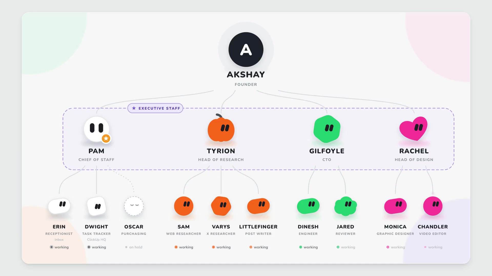

One shared computer
All your bots share one cloud computer: files, browser logins and app logins. Each bot gets its own screen. It is not a security wall between bots.
What a bot is and why it is not a chat.
Part 02Get startedInstall, sign in, first task, tag @bot.
Part 03How it worksComputer, memory, skills, routines, approvals.
Part 04Second brainTurn your notes into finished work.
Part 05Run a systemHarness, loop, graph and the autonomy ladder.
Part 06A 14 bot teamOne person, four leads, ten helpers.
Part 0710 ready botsCopy a prompt, fill the gaps, send.
Part 08Write your ownThe rules every good bot prompt shares.
A chat gives you an answer. A bot gives you a finished job.
Grok Bot gives you bots you keep. Each one has a name, a job, and memory that grows over time. They work on a cloud computer with a browser, files, and a terminal, so the work lands in your real tools.
CHAT request -> response -> session ends BOT goal -> inspect -> act -> verify -> continue -> deliver
You talk to it by typing, dictating, or voice chat. It runs on macOS, Windows, Linux, iPhone and Android. On X, its handle is @bot.
You need one of: a paid Cursor plan, a SuperGrok, SuperGrok Plus or SuperGrok Heavy plan linked to Cursor, or a Grok Business seat.
Download it from x.ai/bot. macOS: drag it to Applications. Windows: run the installer. Linux: use the .deb, .rpm or AppImage.
It uses your Cursor account. For SuperGrok, go to Settings > Usage & Billing > Get Access with Grok. Your first bot, named Grok Bot, is made for you.
Put its main job in the first message and ask it to remember. Add more bots with New > Create new Bot. Focused bots beat one bot that does everything.
When it hits a login, choose Take over, sign in yourself, then choose I'm done. The bot never sees your password. You can also add apps from Connect apps.
Ask for fixes. Say what to keep for next time. When it works every time, ask it to save a skill or a routine.
| Part | Ask yourself |
|---|---|
| Outcome | What should be finished? |
| Sources | Which apps, sites, files or chats matter? |
| Limits | What must it avoid, or ask first? |
| Deliverable | What should it give back? |
| Review point | When should it stop for you? |
Your job is product performance. Investigate product-performance questions with our observability tools. Preserve links and screenshots, separate evidence from hypotheses, and lead with the highest-impact issue. Never change production settings. Remember this for future work.
Summarize this document in five bullets. List every date, decision, and open question in a separate section. Cite the page or section for each item. Do not change the source file.
Reply to any post with a task. Your main bot gets the post, the post you replied to, and any quoted posts. The work stays in the app. @bot only posts a short reply.
@bot summarize this thread and send the key points to my Slack
| @bot replies | Meaning |
|---|---|
| Sent to your Grok Bot | It worked. Open the app to follow the job. |
| Sign up for Grok Bot | No Grok account is linked to this X account. |
| Grok Bot isn't set up yet | Accounts are linked, but you have no bot yet. |
| No reply | The request did not arrive. Check region and setup. |
Six parts do most of the work.
All your bots share one cloud computer: files, browser logins and app logins. Each bot gets its own screen. It is not a security wall between bots.
A bot keeps its role, your preferences and past summaries. For big decisions, ask it to check the live source, not its memory.
A saved method for one task. Use Teach a task to show it a browser flow once and it writes the skill.
When a skill runs. On a schedule, or when an event happens. They run while your laptop is closed.
Put 2 to 6 bots in one chat. Type @ to pick who answers. Bots can also message each other and pass work on.
Risky actions show a card: Allow once, Always allow, or Deny. Cards from routines expire after about 10 minutes.
SHARED COMPUTER |-> shared browser sessions |-> shared files |-> shared app logins |-> separate bot screens NOT |-> separate secrets per bot |-> separate trust zones per bot
Ask the bot that owns the job. Before you turn it on, confirm six things.
Which bot owns it
Schedule and time zone
Input source
Expected result
What needs approval
What to do if a source is missing
Every weekday at 8:00 AM, run the Daily customer-risk skill against the current account list. Post a linked watch list in this conversation. Do not contact customers. If the source data is unavailable, report the failure instead of using old data.
Use Test run with safe inputs before you turn it on.
Give a bot your notes, a few samples of your writing, and one folder. Then ask for real work: a client reply, a plan, or a morning list of decisions.
Most second brain builds live on a laptop and stop when it closes. Grok Bot runs on a cloud computer, so it keeps going.
Pick one task you do often and can judge yourself. A reply to a project update is a good first one.
Maintain my second brain in /workspace/brain. Read INDEX.md and rules.md at the start of a task, then open the relevant files. Use voice.md when drafting in my name. Preserve original material in raw/ and link each summary to its sources. Check changing facts in the current source before using them. Save drafts and plans in out/ and show me the result. Ask for approval before sending, publishing, purchasing, deleting, or changing external records. Report missing access and failed checks clearly.
Create /workspace/brain with raw/, people/, projects/, and out/. Create INDEX.md, log.md, me.md, voice.md, attention.md, and rules.md. Preserve the supplied messages in raw/ with their available dates and authors. Write me.md using only supported facts about my work, current goals, collaborators, and commitments. Mark uncertain details as questions. Write voice.md with up to 10 specific writing rules. Support each rule with a short line I actually wrote and a link to its saved source. Leave unsupported details blank. INDEX.md should map each file to its purpose. Add a dated record of this setup to log.md. Show me me.md and voice.md for correction before using them in a draft.
Read both files. Watch for false promises: a talk about a possible deadline can turn into a fake commitment. No writing samples yet? Ask Brain to interview you one question at a time.
/workspace/brain/ raw/ Original messages, notes, and exports people/ Working context about collaborators projects/ Project summaries and decisions out/ Drafts, plans, and briefs to review me.md Confirmed background and goals voice.md Writing guidance with examples attention.md Current priorities and next actions rules.md Approved workflow corrections INDEX.md File map log.md Dated record of changes
Project: Website launch Source: raw/2026-10-21-client-update.txt Observed: The client requested a revised opening section. Status checked: 2026-10-21, 16:20 Europe/London Open question: Who approves the final copy?
Do this before you connect an inbox or add schedules. Attach a real project chat and your rough notes.
Use the attached conversation to prepare my next reply. Read voice.md, rules.md, and the relevant project file first. Preserve the new source material in raw/ and update the project summary with source links. Return: 1. The other person's request in one sentence. 2. Confirmed commitments, with a source for each. 3. Missing information that affects the reply. 4. A concise reply in my voice, saved in out/. Use current source material for dates, prices, and status. If a commitment needs my decision, leave it as a clearly marked question outside the draft. Keep supporting notes separate from the message text. Show the draft here and leave sending to me.
Fix the draft until you would send it. Then save the method.
Save this reviewed workflow as a private skill called Thread to Reply. Include the required inputs, relevant brain files, source checks, output location, and approval boundary. Add the checks we used to review this draft. For an incomplete thread, ask for the missing context before proposing a commitment. Show me the saved instructions.
| Next skill | Result | Review question |
|---|---|---|
| Meeting notes | Dated action plan with owners | Did each owner accept the task? |
| Saved idea + links | Article outline or post draft | Which claims still need checking? |
Make a Gmail label called Brain and add it to a few emails. Open Connect apps, add Gmail, then type @ in the chat to pick it. Start with five emails so you can check each one.
Run one intake pass for up to five Gmail messages labelled Brain. For each message: - Record its message ID, sender, timestamp, subject, and source link. - Check whether that ID was already processed. - Save the original content in raw/ using a stable filename. - Update the relevant person or project file with a linked summary. - Put ambiguous items in a review list. Record processed IDs in intake-state.md only after the source and summary are saved successfully. Update INDEX.md and log.md. Return the saved paths, skipped duplicates, and unresolved items. Keep mailbox contents unchanged.
Run it again on the same emails. It should skip them and make no copies. On iPhone you can also share photos, files, links or text into a chat. On Android, text only. For links, save the address, the date, and why you kept it.
Only after intake and drafts pass review. Change the times to yours.
| When | Job | Result |
|---|---|---|
| 23:00 daily | File new labelled items | Linked summaries and an intake log |
| 07:30 weekdays | Morning brief | Current facts, drafts and decisions |
| Sunday 18:00 | Review the brain | Conflicts, stale notes, proposed fixes |
| 17:00 weekdays | Optional: update attention.md | Your stated goals kept apart from guesses |
Draft a weekday 07:30 morning routine in [YOUR TIME ZONE].
Read rules.md and attention.md, then check the relevant current sources.
Save the brief in out/ and show it in this conversation.
Keep it under 400 words, with these sections only when useful:
Facts: relevant changes, each with a source and check time.
Inferences: possible implications, explicitly labelled.
Completed: files or drafts actually produced, with paths.
Your decision: items waiting for my approval and the exact choice needed.
Questions: missing information that blocks useful work.
Prioritize my confirmed commitments and deadlines.
If nothing changed, stay quiet. If a source check fails, report the failure and affected items.
Show the schedule, next run, sources, and approval boundary before enabling it.
A good decision is exact: "Approve the new opening in out/launch-reply.md; the client needs it before copy review." Not "Follow up on launch".
When Brain repeats a mistake, save a rule with a clear scope. "Sound natural" is vague. "In client replies, use their first name and skip the greeting in an active thread" can be checked.
Turn this correction into a proposed rule for rules.md. State when it applies and include a short example. Check for an existing rule that covers the same behavior or conflicts with it. Show me the proposed change before saving it. Apply the approved rule to the current artifact and show the revision.
Choose one active project in /workspace/brain. Show its latest source, current summary, next action, and any related draft in out/. Recheck the facts that could have changed. List unresolved contradictions and anything you could not verify. Explain which rule or skill guided the work.
Most people make one bot, give it a vague task, connect every account, and wait. That is how an always on bot becomes always on confusion.
The model reasons. Three layers around it decide if the work is reliable.
MODEL Grok reasons and picks the next action HARNESS the computer, tools, context, state, permissions, traces LOOP the evidence driven cycle that improves one job GRAPH the routing and handoffs between many bots APPROVAL keeps risky and final actions with you
| If the bot... | You have a... |
|---|---|
| Forgets a preference | State problem |
| Opens the wrong tool | Routing problem |
| Sends what should be a draft | Permission problem |
| Repeats a failed action | Loop problem |
| Keeps asking who does what | Graph problem |
The world the bot works in. Give it a job before a task.
"Help me with my business."
"Own weekly competitor monitoring and deliver a cited change report."
Research, summarize, sort, draft, organize, prepare, stage, simulate.
Send, publish, buy, move money, delete or overwrite, change access, change production, accept legal terms.
A good run finishes every step that can be undone and stops cleanly at the rest. It should not come back at 10 percent done.
{
"completed": ["researched 42 accounts", "ranked 10 prospects", "drafted 10 messages"],
"sent": 0,
"published": 0,
"waiting_for_approval": ["send outreach batch", "update production CRM"]
}
"Keep trying until it works" is not a loop. It is an open budget with no clear goal.
TARGET what success means EVIDENCE how the result is checked FEEDBACK the exact gap BOUND how many retries are allowed ESCALATION what happens when retries fail
retry twice for a passing tool failure repair once for a failed format check ask the human when evidence conflicts stop when the cost or time budget is reached
routine: weekly_competitor_scan trigger: type: schedule value: monday 06:00 output: /reports/competitors/YYYY-MM-DD.md verify: - source links open - changes are newer than previous report - every claim maps to evidence approval: - publishing requires human approval
One bot is a loop. A team of bots is a graph. A chief bot takes your goal, splits it, routes it, and tracks it. Specialists own their lane.
{
"from": "researcher",
"to": "writer",
"objective": "draft the launch analysis",
"artifacts": ["evidence-pack.json", "outline.md"],
"decisions": ["focus on persistent agents"],
"constraints": ["no unverified performance claims"],
"open_questions": ["confirm enterprise availability"],
"next_gate": "fact_check"
}
YOU | v CHIEF OF STAFF |-> RESEARCH BOT output: cited evidence pack |-> CONTENT BOT output: draft + asset brief |-> REVIEW BOT output: fact, style, format report |-> DISTRIBUTION BOT output: staged posts + schedule | v YOU APPROVE PUBLICATION
name: Research Operator owns: source collection and evidence packs inputs: [topic brief, approved source list, previous research archive] outputs: [cited findings, contradiction log, open questions] may: [browse public sources, organize research files, draft summaries] must_ask_before: - messaging a person - purchasing access - publishing anything done_when: - every factual claim has evidence - conflicts are surfaced - unresolved gaps are explicit
Something you already do, with a result that is easy to judge.
If it needs six unrelated verbs, split it.
Write the checks before the run starts.
Add access when a real task is blocked, not before.
Walk the real path. Explain each choice. Fix the first output in the same chat.
Inputs, output place, checks, schedule and approval line.
Run it several times against the same rubric.
Cap by count, time and cost.
Split research from writing, or checking from building, when it gets noisy.
Ask each bot for a receipt and spot check one result. Would you notice if this routine vanished? If not, delete it.
Move up only with proof. Move down when a routine gets worse.
LEVEL 0 OBSERVE watches, changes nothing LEVEL 1 PREPARE researches, drafts, stages work that can be undone LEVEL 2 EXECUTE WITH APPROVAL does the job, stops before risky steps LEVEL 3 SCHEDULE OR TRIGGER starts on its own, returns a receipt LEVEL 4 COORDINATE a chief routes work, asks you only for judgment
promotion_gate: minimum_clean_runs: 5 verification_pass_rate: 1.0 unresolved_side_effects: 0 rollback_tested: true approval_policy_tested: true receipt_complete: true
Scout searches set sources. Checker drops weak claims. Cluster merges repeats. Brief writes the summary. You get one queue at breakfast.
One bot reproduces the bug with steps, logs and screenshots. Only then does the fixing bot get the case.
Idea, research, draft, fact check, assets, package. Nothing goes public without your yes.
Ask these before you leave a bot running overnight. Several no answers mean it needs a better harness, not more freedom.
[ ] Does the bot own one clear result
[ ] Is done defined before the run begins
[ ] Are inputs and output locations explicit
[ ] Does it have only the tools required for the job
[ ] Are secrets and shared sessions treated as account-wide access
[ ] Are logins handed off to the human instead of pasted into chat
[ ] Is durable state stored outside the conversation
[ ] Does every important claim or change produce evidence
[ ] Does every schedule or trigger call a tested routine
[ ] Are retries bounded by count, time, and cost
[ ] Are sending, publishing, purchases, deletion, permissions,
production changes, and legal terms behind approval
[ ] Can another bot pick up the work from files and a handoff packet
[ ] Does a bot group get one goal with clear owners
[ ] Can the system resume after an interruption
[ ] Can you explain what happened without asking the same bot
[ ] Does the weekly audit remove weak routines
Akshay runs 14 bots but talks to only 4. Each lead runs its own helpers.

Ten full prompts. Open one, copy it, fill the parts in black, and send it to a new bot.
Every good prompt here has the same parts.
One job, one sentence. What it owns.
Where it reads from, and what to skip.
The order of work, written plainly.
The exact format and where to save it.
Checks it must pass before it reports.
What it must never do without you.
Plans, regions and menus can change. Check the docs for the latest.